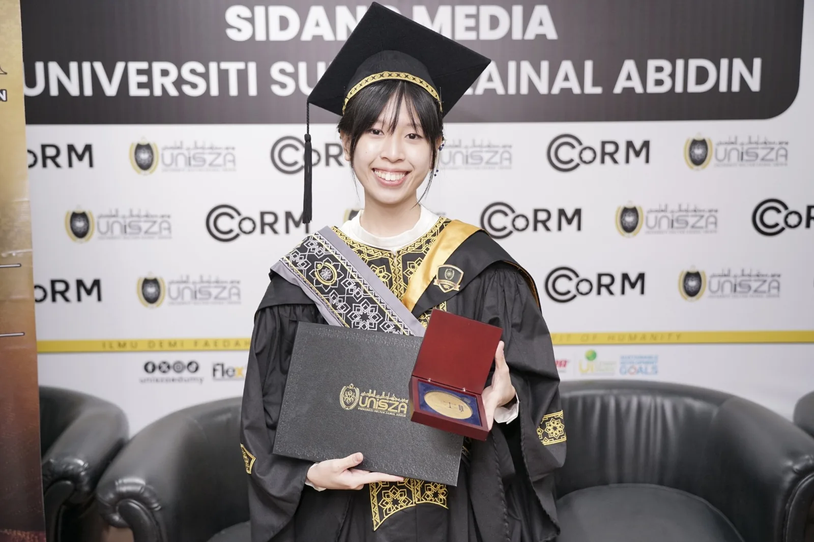

(411816-A)
Incorporated in 1996.
REGISTERED OFFICE
Incorporated in 1996.
Please address written correspondence to Yayasan Tun Abdul Hamid at the registered office shown here.



Universities, legal education bodies and organisations interested in programme collaboration.
For information about the foundation’s support for law students, explore our legal education programmes.
Requests relating to foundation history, photographs, anniversary material and archival records.